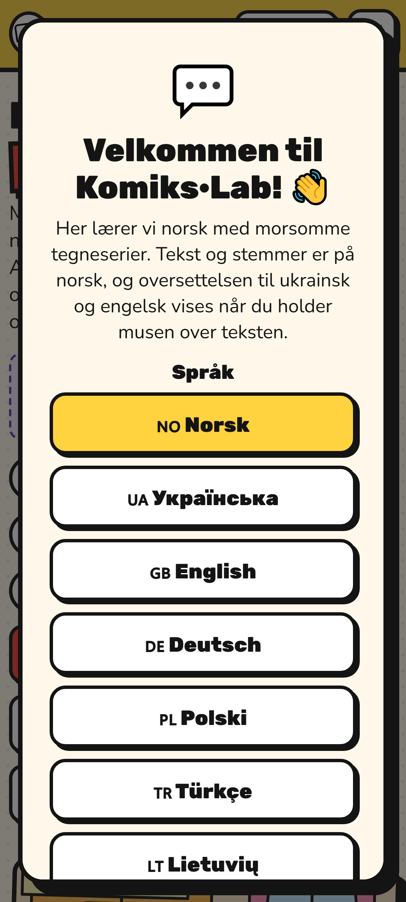
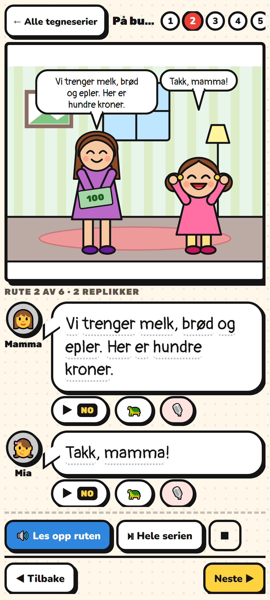
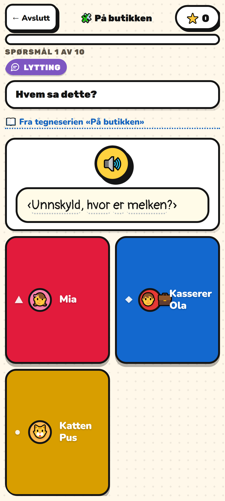
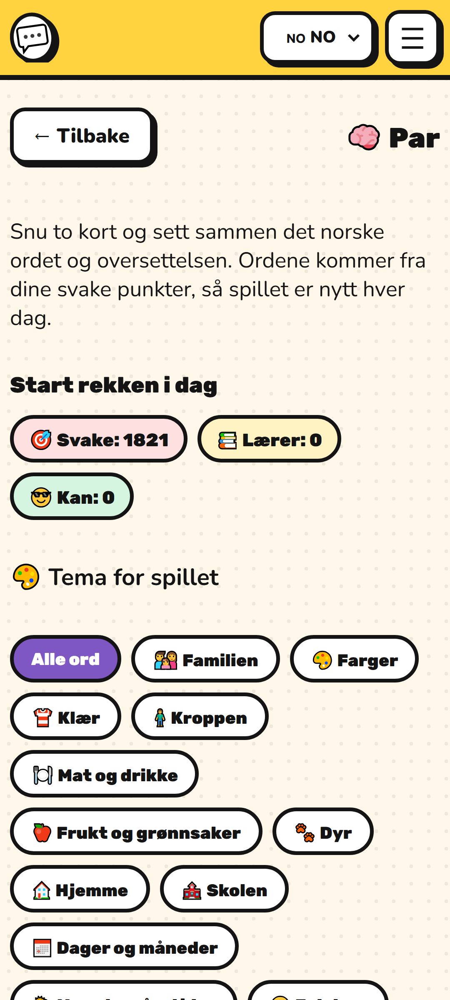

Покрокова інструкція для Android — від перевірки до кнопки «Опублікувати»
Скільки часу: сама збірка — година. Перевірка особи в Google може зайняти кілька днів, тож крок 6 варто почати першим.
Одна команда перевіряє комікси, переклади, озвучення, відсутність паролів у збірці, розмір застосунку й матеріали для магазину.
cd C:\comiks
node tools\audit-all.jsМає закінчитися рядком ✅ Усе гаразд — можна публікувати. Якщо ні — виправте те, на що вкаже, і запустіть ще раз.
Онлайн-версія застосунку звертається до сервера: акаунти, рейтинг, друзі, дзвінок. Тому спершу оновіть сайт.
node tools\build.jsЗалийте весь вміст теки dist\ у public_html/comiks/ на Hostinger.
api/lib.php. Саме він дозволяє застосунку звертатися до сервера. Без нього застосунок працюватиме лише як читалка: ні входу, ні рейтингу, ні синхронізації прогресу.Перевірити, що сервер пускає застосунок:
curl -i -H "Origin: https://localhost" https://bilohash.com/comiks/api/players.php?sort=starsУ відповіді має бути рядок Access-Control-Allow-Origin: https://localhost.
Перед складанням варто побачити те саме, що покаже телефон. Є два варіанти застосунку:
| Варіант | Команда | Розмір | Кому |
|---|---|---|---|
| Онлайн з акаунтами | node app\tools\prepare-web.js --lightnode app\tools\serve.js | 15 МБ | основний — прогрес синхронізується з сайтом |
| Офлайн без акаунтів | node app\android_offline\build.js --serve | 148 МБ | простіший для перевірки Google: не збирає даних |
Відкрийте localhost:8970 (онлайн) або localhost:8971 (офлайн) і звузьте вікно до ширини телефона.
На вашому комп'ютері їх ще немає — перевірено, java не знайдено.
.msijava -versionМає показати версію 17.
cd C:\comiks\app
npm install
npm run add:android
npm run androidВідкриється Android Studio з готовим проєктом.
Build → Generate Signed App Bundle → Android App Bundle → Create new…
| Поле | Що вписати |
|---|---|
| Key store path | C:\comiks\app\komikslab.jks |
| Password | свій, надійний |
| Alias | komikslab |
| Validity (years) | 25 |
| First and Last Name | Ruslan Bilohash |
Результат: app\android\app\build\outputs\bundle\release\app-release.aab
Щоб просто перевірити на своєму телефоні, досить Build → Build APK(s) і перекинути .apk на пристрій.
play.google.com/console — одноразовий внесок 25 $.
Create app → назва Komiks·Lab — Learn Norwegian, мова англійська, тип App, Free.
store\android\| Що | Файл | Розмір |
|---|---|---|
| Іконка застосунку | icon-512.png | 512 × 512 |
| Банер (Feature graphic) | feature-graphic.png | 1024 × 500 |
| Знімки екрана | 01-home.png … 08-cards.png | 1080 × 1920 |




Короткий опис (до 80 символів):
Learn Norwegian with voiced comics, tests and games. Free, A1–B2.Повний опис — скопіюйте як є:
Learn Norwegian (Bokmål) the way people actually speak it — through short, funny comics.
Every line is read aloud by a natural Norwegian voice, and the translation appears the moment you tap the text. Start with your first "Hei!" and work up to talking with colleagues, landlords and doctors.
WHAT IS INSIDE
• 75 voiced comics, levels A1 to B2 — everyday life in Norway: the shop, the doctor, the job interview, the dugnad, the tax card, the parents' meeting.
• 972 words in 47 topics, each with a picture and audio.
• Tests in Norwegian: listening, word order, pictures, missing words, true or false.
• Flashcards with spaced repetition — the app brings back exactly the words you keep forgetting.
• Pairs: a short daily game built from your own weak spots.
• Writing practice with instant checking, and a mock Norskprøven.
• Grammar with tables: pronouns, tenses, en/ei/et, word order.
• Games for the whole family: Logic Race, Math Rocket, chess and quiz rooms you join with a QR code.
INTERFACE IN YOUR LANGUAGE
Norwegian, English, Ukrainian, German, Polish, Turkish, Lithuanian and Arabic. Pick several translation languages at once and see them all in the comic.
COMPLETELY FREE
No subscription, no payments, no ads, no in-app purchases. An account is optional — it only keeps your progress, stars and friends across devices.
MADE FOR
People moving to Norway, international workers and families, and anyone preparing for a Norwegian course or the Norskprøven exam. Children can use it with a parent.
All stories, characters, drawings and voices are fictional and created with artificial intelligence.Саме тут зазвичай застрягають. Нижче — готові відповіді.
https://bilohash.com/comiks/#/terms| Питання | Відповідь |
|---|---|
| Чи збираєте дані? | Так (для офлайн-версії — Ні) |
| Чи передаєте третім особам? | Ні |
| Чи шифрується передача? | Так, HTTPS |
| Чи можна видалити дані? | Так, у кабінеті застосунку |
| Тип даних | Навіщо | Обов'язково? |
|---|---|---|
| Ім'я | профіль і рейтинг | ні — лише з акаунтом |
| підтвердження акаунта, відновлення пароля | ні | |
| App activity | прогрес навчання, зірки, результати тестів | ні |
| Повідомлення | листування між друзями | ні |
| Аудіо | не збираємо — розпізнавання робить браузер, записи не зберігаються | — |
Категорія Education. Чесні відповіді дають 3+ / PEGI 3: немає насильства, лайки, азартних ігор, покупок і реклами. Обов'язково вкажіть, що є обмін повідомленнями між користувачами (для офлайн-версії — немає).
RECORD_AUDIO). Пояснення для форми:Microphone is used only for pronunciation practice and the in-app speaking exercise. No audio is recorded or stored..aab, додайте свою пошту, поставте застосунок за отриманим посиланням і перевірте на живому телефоні..aab → Send for review.Перша перевірка триває від кількох годин до тижня. Оновлення проходять швидше.
node tools\build.js
node app\tools\prepare-web.js --light
cd app && npm run androidУ файлі app\android\app\build.gradle підніміть:
versionCode — ціле число, обов'язково більше за попереднє (1 → 2 → 3…). Google відхилить бандл із тим самим номером.versionName — те, що бачить людина: 1.1, 1.2…Далі знову Generate Signed App Bundle — тим самим ключем.
Потрібен Mac із Xcode і обліковий запис Apple Developer — 99 $ на рік.
cd C:\comiks\app
npm run add:ios
npm run iosInfo.plist обов'язковий опис NSMicrophoneUsageDescription;